vignettes/get_sitedata_nonetwork.Rmd
get_sitedata_nonetwork.RmdThis is an example for how to collect data to force the P-model (rsofun run) for a site where we don’t have network measured data but instead extract climate forcing data from global files (WATCH-WFDEI and CRU).
Let’s extract data for the location corresponding to FLUXNET site ‘CH-Lae’ (lon = 8.365, lat = 47.4781). This extracts from original WATCH-WFDEI files, provided as NetCDF (global, 0.5 degree resolution), provided as monthly files containing all days in each month. The data directory specified here (dir = "~/data/watch_wfdei/") contains subdirectories with names containing the variable names (corresponding to the ones specified by the argument getvars = list(temp = "Tair")). We read data for just one year here (2007).
df_watch <- ingest_bysite( sitename = "efg", # can be any name source = "watch_wfdei", getvars = list(temp = "Tair", prec = "Rainf", vpd = "Qair", ppfd = "SWin"), dir = "~/data/watch_wfdei/", timescale = "d", year_start = 2015, year_end = 2015, lon = 117.369258403, lat = 30.026229678, verbose = FALSE )
## Warning: The `x` argument of `as_tibble.matrix()` must have unique column names if `.name_repair` is omitted as of tibble 2.0.0.
## Using compatibility `.name_repair`.
## This warning is displayed once every 8 hours.
## Call `lifecycle::last_warnings()` to see where this warning was generated.df_watchRead file with daily data and compare to WATCH-WFDEI.
library(lubridate) df_site <- read_csv("~/data/neecf/climate_data/site_ds_neecf_daily.csv") %>% mutate(date = lubridate::ymd(paste0(as.character(year), "-01-01"))) %>% mutate(date = date + months(month-1)) %>% mutate(date = date + days(day-1)) %>% rename(prec_obs = precipitation, temp_obs = temperature)
## Parsed with column specification:
## cols(
## year = col_double(),
## month = col_double(),
## day = col_double(),
## precipitation = col_double(),
## temperature = col_double()
## )df_test <- df_watch %>% left_join(df_site, by = "date") df_test %>% ggplot() + geom_line(aes(date, temp), color = "red") + geom_line(aes(date, temp_obs))
## Warning: Removed 31 row(s) containing missing values (geom_path).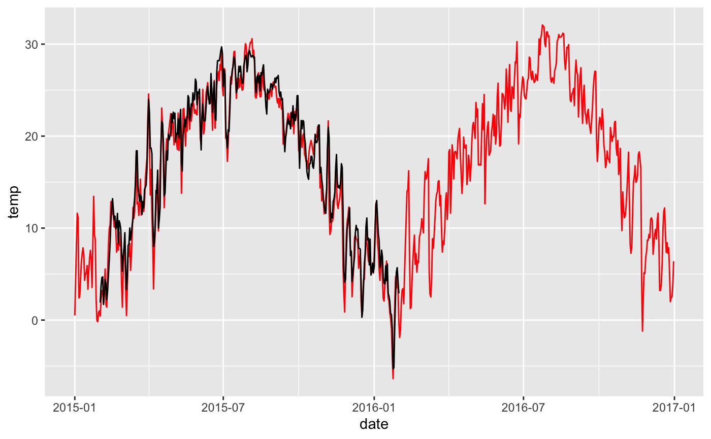
df_test %>% ggplot() + geom_line(aes(date, prec), color = "red") + geom_line(aes(date, prec_obs))
## Warning: Removed 31 row(s) containing missing values (geom_path).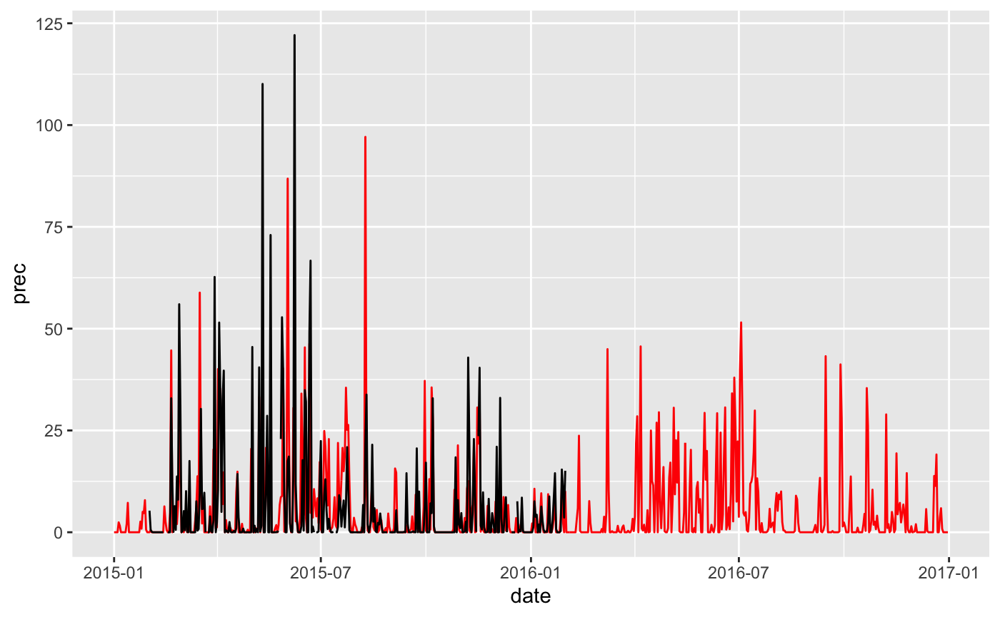
Overwrite WATCH-WFDEI data if measured data is available.
ddf <- df_test %>% mutate(temp = ifelse(!is.na(temp_obs), temp_obs, temp), prec = ifelse(!is.na(prec_obs), prec_obs, prec))
Check.
ddf %>% ggplot() + geom_line(aes(date, temp), color = "red") + geom_line(aes(date, temp_obs))
## Warning: Removed 31 row(s) containing missing values (geom_path).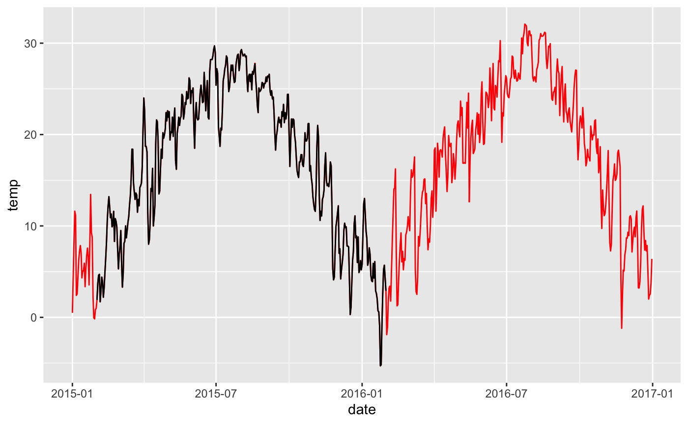
ddf %>% ggplot() + geom_line(aes(date, prec), color = "red") + geom_line(aes(date, prec_obs))
## Warning: Removed 31 row(s) containing missing values (geom_path).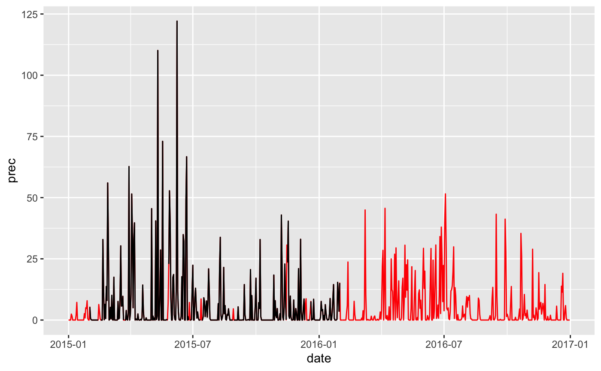
Use sub-daily data to get daytime mean temperature and daytime mean VPD.
hdf <- read_csv("~/data/neecf/climate_data/site_ds_neecf_halfhourly.csv") %>% mutate(date_time = ymd_hm(date_time))
## Parsed with column specification:
## cols(
## year = col_double(),
## Month = col_double(),
## date = col_character(),
## date_time = col_character(),
## air_temp = col_double(),
## soil_RH = col_double(),
## soil_temp = col_double()
## )hdf %>% slice(1:100) %>% ggplot(aes(date_time, air_temp)) + geom_line()
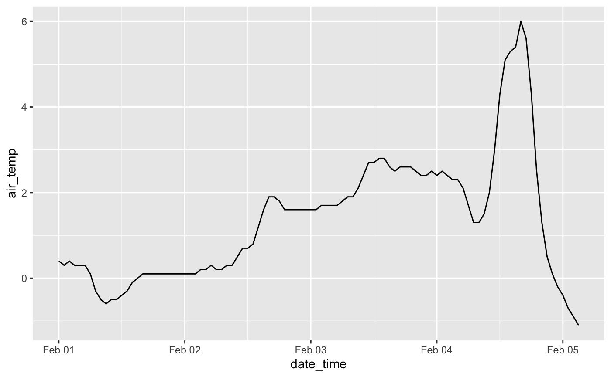
Get daily mean and daytime mean air temperature
ddf_hdf <- hdf %>% mutate(date = date(date_time)) %>% ungroup() %>% group_by(date) %>% summarise(temp_mean = mean(air_temp, na.rm = TRUE))
## `summarise()` ungrouping output (override with `.groups` argument)Compare.
df_test <- ddf %>% left_join(ddf_hdf, by = "date") df_test %>% ggplot() + geom_line(aes(date, temp_mean), color = "red") + geom_line(aes(date, temp))
## Warning: Removed 31 row(s) containing missing values (geom_path).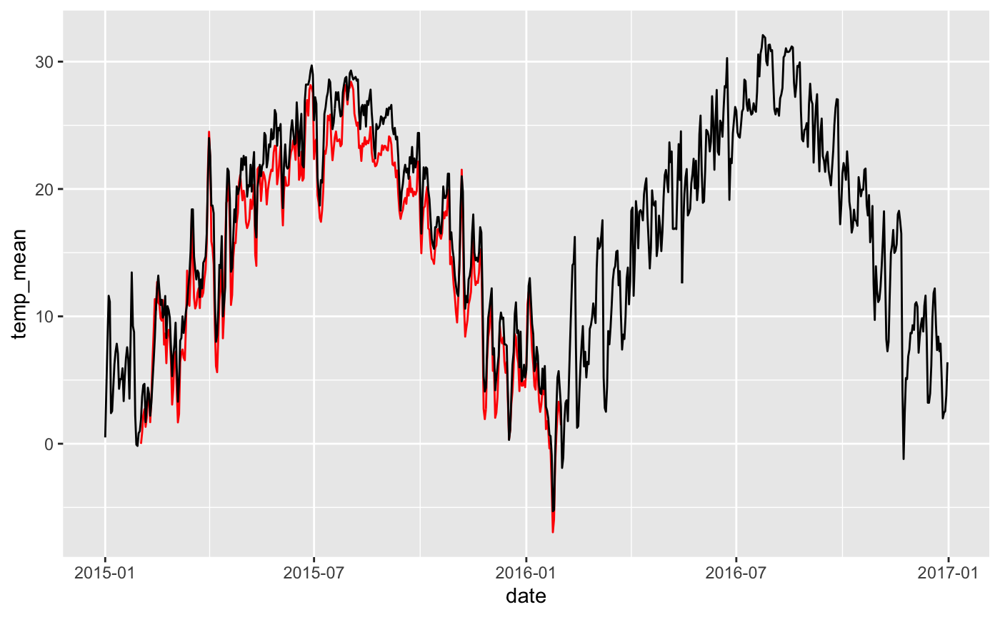
Assume relative humidity constant throughout the day, and use observed diurnal temperature variations to calculate diurnal VPD variations.
hdf <- hdf %>% mutate(date = ymd(date)) %>% left_join(dplyr::select(ddf, date, qair), by = "date") %>% rowwise() %>% mutate(vpd = calc_vpd( qair = qair, tc = air_temp, tmin = NA, tmax = NA, patm = NA, elv = 330 )) hdf %>% slice(1:500) %>% ggplot(aes(date_time, vpd)) + geom_line()
## Warning: Removed 744 row(s) containing missing values (geom_path).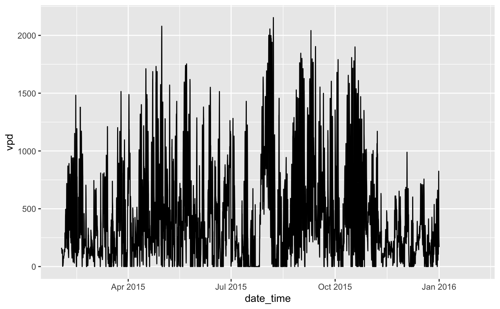
hdf %>% ggplot(aes(x = vpd, y = ..density..)) + geom_histogram()
## `stat_bin()` using `bins = 30`. Pick better value with `binwidth`.## Warning: Removed 744 rows containing non-finite values (stat_bin).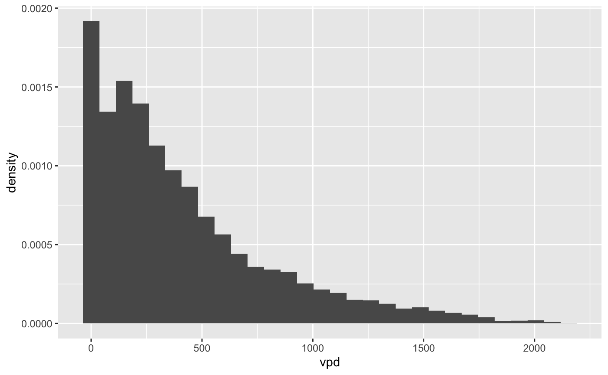
Get daily mean VPD based on hourly VPD.
ddf_hdf <- hdf %>% mutate(date = date(date_time)) %>% ungroup() %>% group_by(date) %>% summarise(temp_mean = mean(air_temp, na.rm = TRUE), vpd_mean = mean(vpd, na.rm = TRUE))
## `summarise()` ungrouping output (override with `.groups` argument)ddf_midday_hdf <- hdf %>% mutate(date = date(date_time)) %>% dplyr::filter(hour(date_time) %in% 11:16) %>% ungroup() %>% group_by(date) %>% summarise(temp_mean = mean(air_temp, na.rm = TRUE), vpd_mean = mean(vpd, na.rm = TRUE))
## `summarise()` ungrouping output (override with `.groups` argument)Check.
ddf_hdf %>% ggplot(aes(date, vpd_mean)) + geom_line()
## Warning: Removed 31 row(s) containing missing values (geom_path).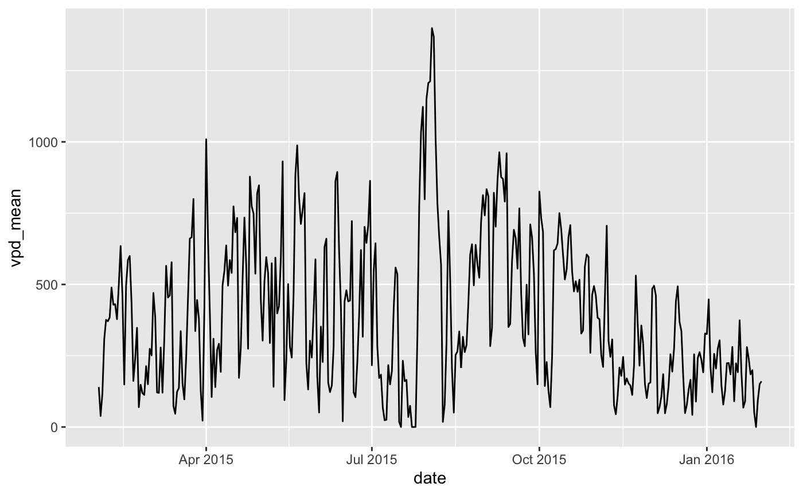
gg1 <- ggplot() + geom_line(data = hdf %>% dplyr::filter(month(date_time) %in% 6:8), aes(date_time, vpd)) gg2 <- ggplot() + geom_line(data = ddf_midday_hdf %>% dplyr::filter(month(date) %in% 6:8), aes(date, vpd_mean)) gg3 <- ddf %>% dplyr::filter(month(date) %in% 6:8) %>% ggplot(aes(date, prec)) + geom_line(color = "royalblue") library(patchwork)
##
## Attaching package: 'patchwork'## The following object is masked from 'package:raster':
##
## areagg1 / gg2 / gg3
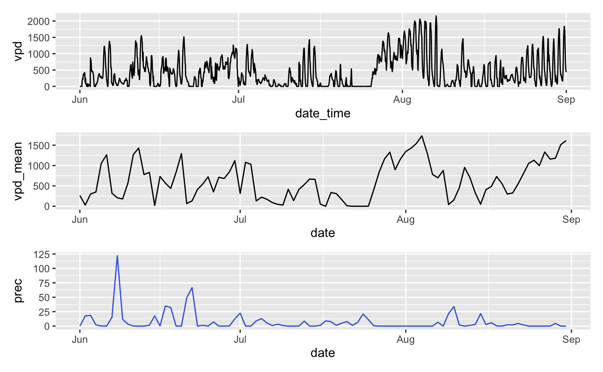
Complement daily data frame ddf.
ddf <- ddf %>% left_join( ddf_midday_hdf %>% rename(vpd_midday = vpd_mean, temp_midday = temp_mean), by = "date" )
Check
ddf %>% ggplot() + geom_line(aes(date, temp_midday), color = "red") + geom_line(aes(date, temp))
## Warning: Removed 31 row(s) containing missing values (geom_path).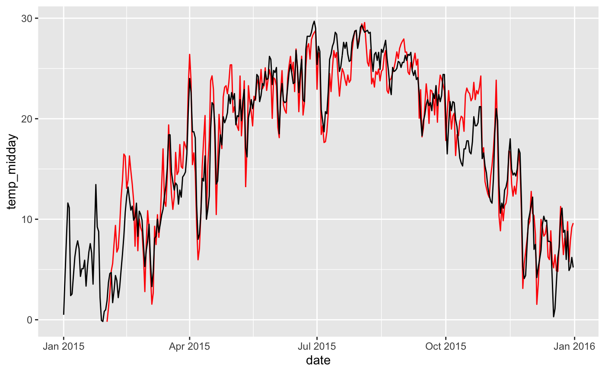
ddf %>% ggplot() + geom_line(aes(date, vpd_midday))
## Warning: Removed 31 row(s) containing missing values (geom_path).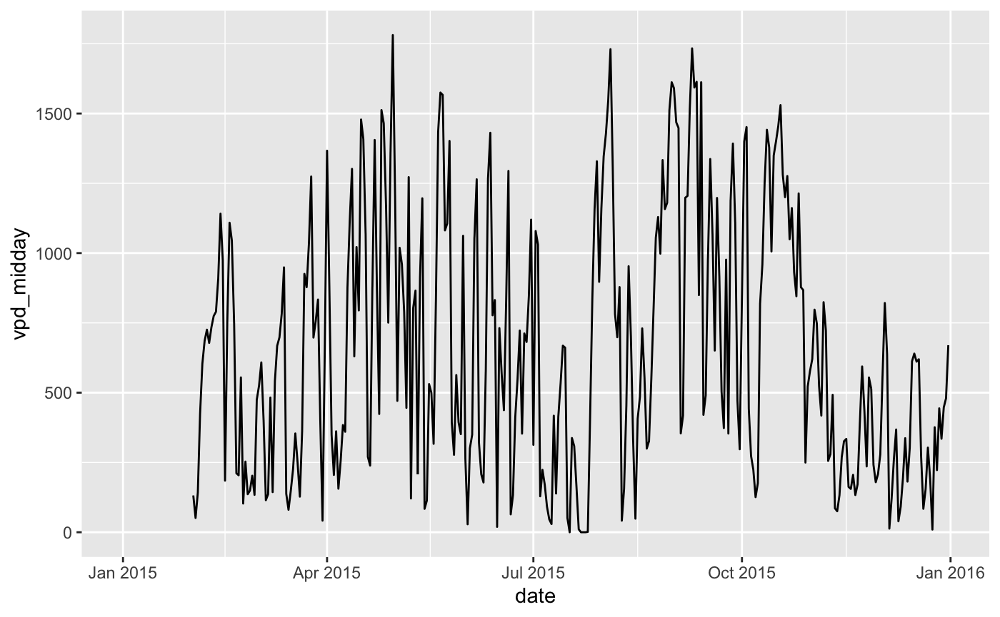
ddf %>% ggplot() + geom_line(aes(date, ppfd))
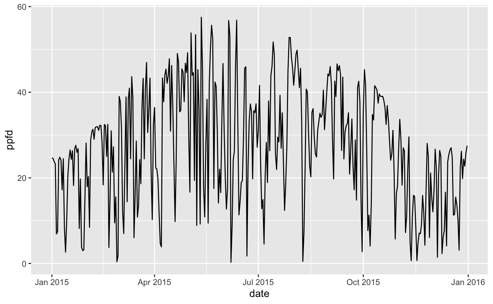
Cloud cover data.
df_cru <- ingest_bysite( sitename = "efg", # can be any name source = "cru", getvars = list(ccov = "cld"), dir = "~/data/cru/ts_4.01/", timescale = "d", year_start = 2015, year_end = 2015, lon = 117.369258403, lat = 30.026229678, verbose = FALSE )
## Warning in .varName(nc, varname, warn = warn): varname used is: cld
## If that is not correct, you can set it to one of: cld, stndf_cru## # A tibble: 365 x 4
## date ccov_int ccov sitename
## <date> <dbl> <dbl> <chr>
## 1 2015-01-01 58.9 58.9 efg
## 2 2015-01-02 58.1 58.1 efg
## 3 2015-01-03 57.4 57.4 efg
## 4 2015-01-04 56.8 56.8 efg
## 5 2015-01-05 56.2 56.2 efg
## 6 2015-01-06 55.7 55.7 efg
## 7 2015-01-07 55.3 55.3 efg
## 8 2015-01-08 54.9 54.9 efg
## 9 2015-01-09 54.6 54.6 efg
## 10 2015-01-10 54.3 54.3 efg
## # … with 355 more rowsIngesting CO2 data is particularly simple. We can safely assume it’s well mixed in the atmosphere (independent of site location), and we can use a annual mean value for all days in respective years, and use the same value for all sites. Using the R package climate, we can load CO2 data from Mauna Loa directly into R. This is downloading data from ftp://aftp.cmdl.noaa.gov/products/trends/co2/co2_mm_mlo.txt. Here, ingest() is a wrapper for the function climate::meteo_noaa_co2().
df_co2 <- ingest_bysite( sitename = "efg", source = "co2_mlo", year_start= 2015, year_end = 2015, verbose = FALSE )